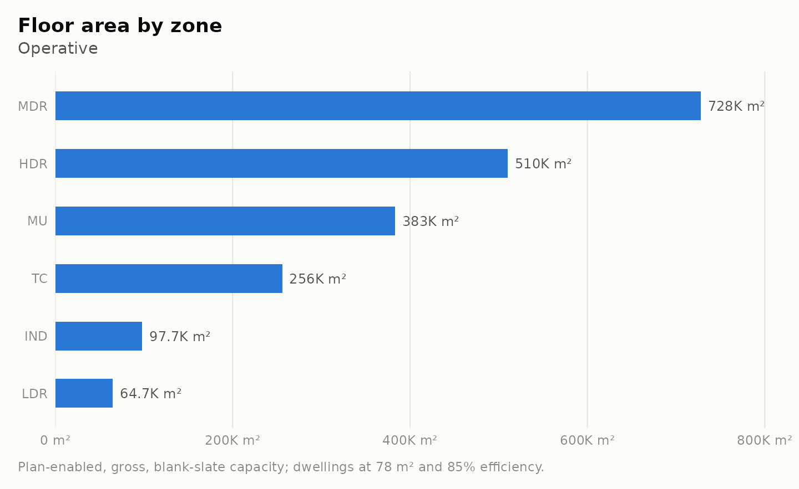
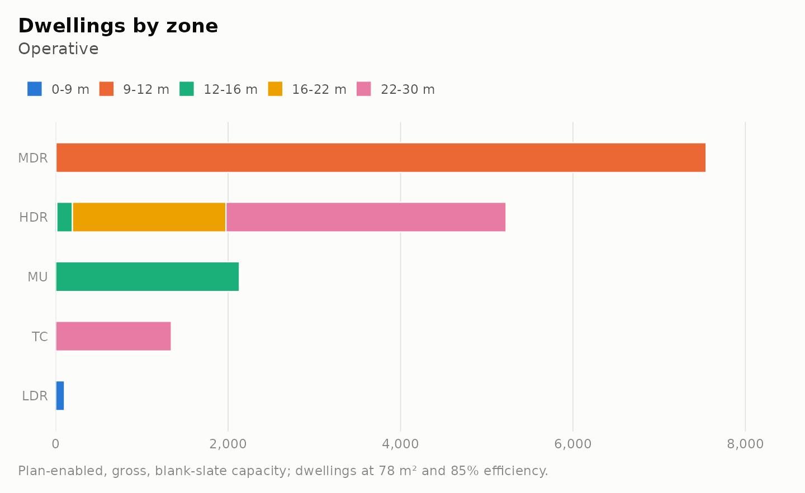
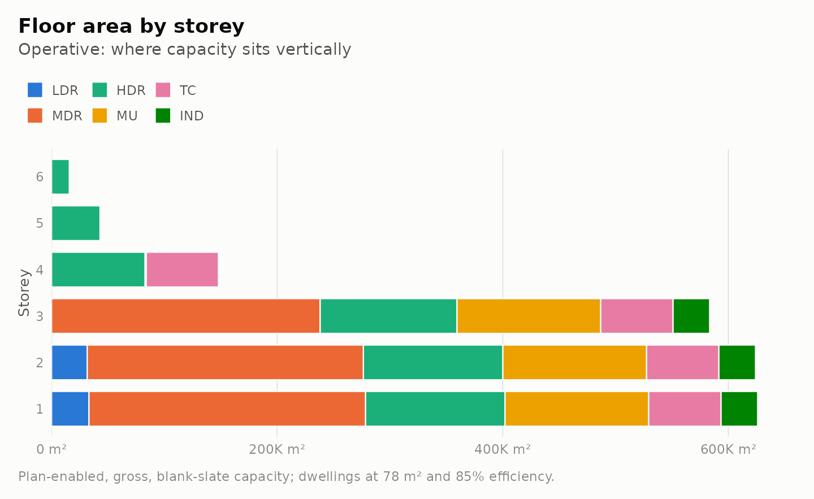
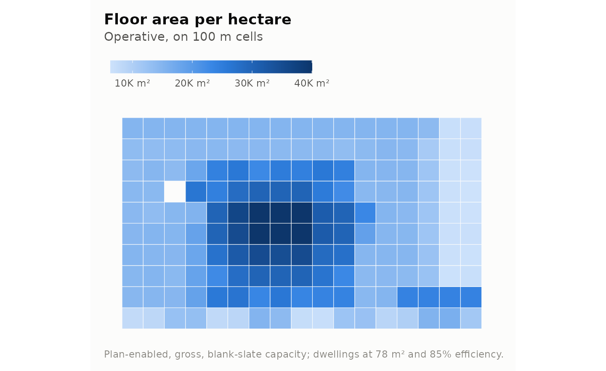
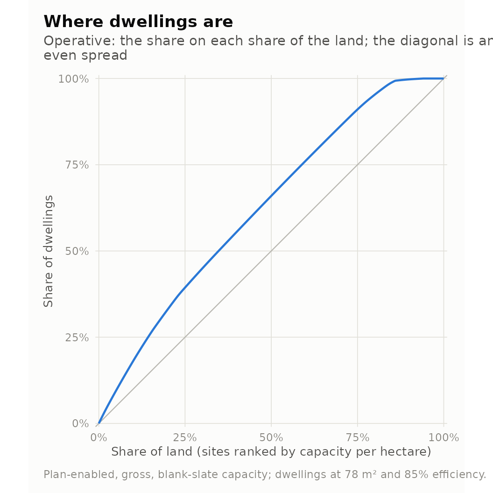
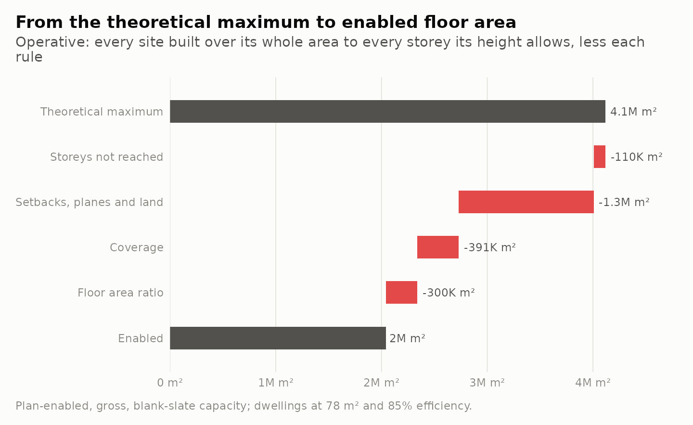
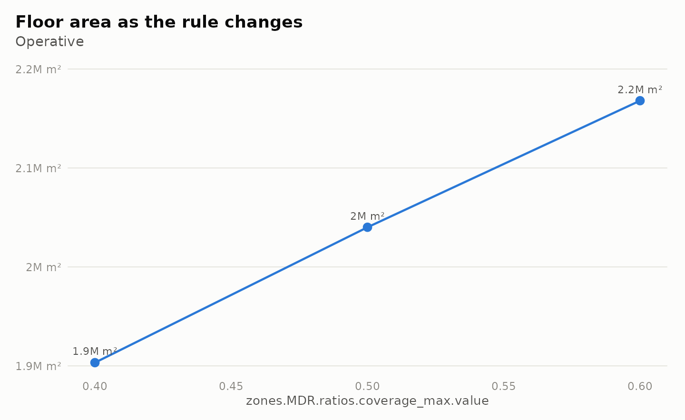

Every breakdown of a capacity result comes from one function,
summarise_capacity(), with a by argument for
what to group by and a measures argument for what to
report. Each site is counted once, in one group, so groups always add to
the total. Each summary has a plot: every plot returns a ggplot object,
in one quiet theme (theme_capacity(), light or dark) with a
caption stating what the figures are.
library(plancap)
#>
#> Attaching package: 'plancap'
#> The following object is masked from 'package:stats':
#>
#> density
town <- exampleton()
sc <- scenario("Operative", rulebook_example("exampleton"),
parcels = town$parcels[town$parcels$parcel_type == "land", ],
roads = town$parcels[town$parcels$parcel_type == "road", ],
zoning = town$zoning,
layers = town[c("height_areas", "flood_hazard", "heritage", "trees",
"precincts", "transit")],
water = town$water, centrelines = town$road_centrelines)
cap <- estimate_capacity(sc)By zone
summarise_capacity(cap, by = "zone")
#> <plancap summary> Operative, by zone_key: 6 rows
#> zone_key sites land_area floor_area dwellings far floor_area_share
#> HDR 272 215,500 510,439 5,225 2.37 25.0%
#> IND 24 48,000 97,673 0 2.03 4.8%
#> LDR 108 96,000 64,707 102 0.67 3.2%
#> MDR 714 512,500 727,969 7,545 1.42 35.7%
#> MU 176 128,000 383,313 2,131 2.99 18.8%
#> TC 85 64,000 256,000 1,342 4.00 12.5%
plot_capacity(cap)
A second grouping stacks within each bar:
plot_capacity(cap, measure = "dwellings", fill = "height_band")
The measures available are listed in
?summarise_capacity; per hectare measures are of land:
summarise_capacity(cap, by = "zone",
measures = c("sites", "dwellings", "dwellings_per_ha", "floor_area_mean"))
#> <plancap summary> Operative, by zone_key: 6 rows
#> zone_key sites dwellings dwellings_per_ha floor_area_mean
#> HDR 272 5,225 242.5 1,876.6
#> IND 24 0 0.0 4,069.7
#> LDR 108 102 10.6 599.1
#> MDR 714 7,545 147.2 1,019.6
#> MU 176 2,131 166.5 2,177.9
#> TC 85 1,342 209.7 3,011.8By height, site size and storey
height_band, site_size_band and
far_band group sites into bands (breaks
changes them). by = "storey" is different: it is floor area
by storey level, so it shows where capacity sits
vertically.
summarise_capacity(cap, by = c("zone", "height_band"), measures = c("sites", "floor_area"))
#> <plancap summary> Operative, by zone_key, height_band: 11 rows
#> zone_key height_band sites floor_area
#> HDR 0-9 m 5 497
#> HDR 9-12 m 1 242
#> HDR 12-16 m 25 18,006
#> HDR 16-22 m 111 185,045
#> HDR 22-30 m 130 306,650
#> IND 12-16 m 24 97,673
#> LDR 0-9 m 108 64,707
#> MDR 0-9 m 7 315
#> MDR 9-12 m 707 727,654
#> MU 12-16 m 176 383,313
#> TC 22-30 m 85 256,000
summarise_capacity(cap, by = "storey")
#> <plancap summary> Operative, by storey: 6 rows
#> storey sites floor_area floor_area_share
#> 1 1,371 626,004 30.7%
#> 2 1,369 624,082 30.6%
#> 3 1,259 583,431 28.6%
#> 4 354 147,953 7.3%
#> 5 241 42,920 2.1%
#> 6 138 15,710 0.8%
plot_height_profile(cap, by = "zone")
By location
Give polygons as areas (each site goes to the area
covering most of it), or a cell size as grid. A spatial
summary comes back with the areas’ geometry, ready to map.
cells <- summarise_capacity(cap, by = "grid", grid = 250, measures = c("sites", "floor_area"))
cells[order(-cells$floor_area), ][1:5, ]
#> Simple feature collection with 5 features and 3 fields
#> Geometry type: POLYGON
#> Dimension: XY
#> Bounding box: xmin: 2200250 ymin: 5600250 xmax: 2201000 ymax: 5600750
#> Projected CRS: NZGD2000 / New Zealand Transverse Mercator 2000
#> grid sites floor_area geometry
#> 14 8803_22401 77 193352.3 POLYGON ((2200750 5600250, ...
#> 10 8802_22401 68 172252.9 POLYGON ((2200500 5600250, ...
#> 15 8803_22402 60 139045.1 POLYGON ((2200750 5600500, ...
#> 6 8801_22401 73 119582.2 POLYGON ((2200250 5600250, ...
#> 11 8802_22402 50 117333.8 POLYGON ((2200500 5600500, ...
plot_capacity_map(cap, grid = 100)
The capacity curve ranks sites by capacity per hectare and shows how much of the capacity is on how much of the land:
plot_cumulative(cap)
What limits capacity
by = "binding" groups sites by the rule that limits
their dwellings, and constraint_breakdown() follows the
floor area from a theoretical maximum (every site built over its whole
area to every storey its height allows) down to what is enabled, rule by
rule. The steps add up exactly.
summarise_capacity(cap, by = "binding", measures = c("sites", "dwellings"))
#> <plancap summary> Operative, by dwelling_binding: 4 rows
#> dwelling_binding sites dwellings
#> area_total 19 288
#> density 108 102
#> entitlement 6 18
#> floor_area 1,246 15,937
constraint_breakdown(cap)
#> <plancap constraint breakdown> Operative
#> step floor_area remaining
#> theoretical 4,117,898 4,117,898
#> storeys_not_reached 110,429 4,007,469
#> setbacks_and_land 1,276,117 2,731,352
#> coverage 391,158 2,340,195
#> far 300,094 2,040,100
#> enabled 2,040,100 2,040,100
plot_constraints(cap)
Sweeping a rule
sensitivity() runs capacity with a rule at each of a set
of values; runs after the first rebuild only the sites the rule
reaches.
s <- sensitivity(sc, "zones.MDR.ratios.coverage_max.value", c(0.4, 0.5, 0.6))
s
#> <plancap sensitivity> Operative: zones.MDR.ratios.coverage_max.value
#> value floor_area dwellings floor_area_change dwellings_change
#> 0.4 1,903,286 14,867 0 0
#> 0.5 2,040,100 16,345 136,814 1,478
#> 0.6 2,168,004 17,717 264,718 2,850
plot_sensitivity(s)
For a report
capacity_table() formats any summary as a table with a
note on what the figures are, and unmodelled_report() lists
the rules the rulebook does not model, with the likely direction of
their effect.
capacity_table(summarise_capacity(cap, by = "zone", measures = c("sites", "floor_area", "dwellings")))| Plan-enabled capacity: Operative | ||||
| Zone | Sites | Floor area (m²) | Dwellings | |
|---|---|---|---|---|
| HDR | 272 | 510,439 | 5,225 | |
| IND | 24 | 97,673 | 0 | |
| LDR | 108 | 64,707 | 102 | |
| MDR | 714 | 727,969 | 7,545 | |
| MU | 176 | 383,313 | 2,131 | |
| TC | 85 | 256,000 | 1,342 | |
| Total | — | 1,379 | 2,040,100 | 16,345 |
| Plan-enabled, gross, blank-slate capacity; dwellings at 78 m2 and 85% efficiency. | ||||
unmodelled_report(cap)[, c("rule", "likely_effect")]
#> rule likely_effect
#> 1 Outlook space from principal living rooms overstates
#> 2 Sunlight to the town square overstates
#> 3 Outdoor living space per dwelling overstates